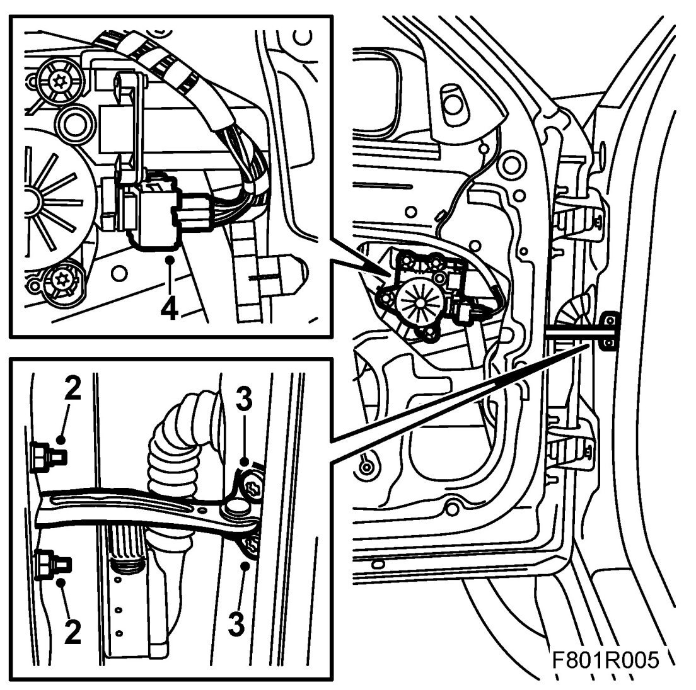
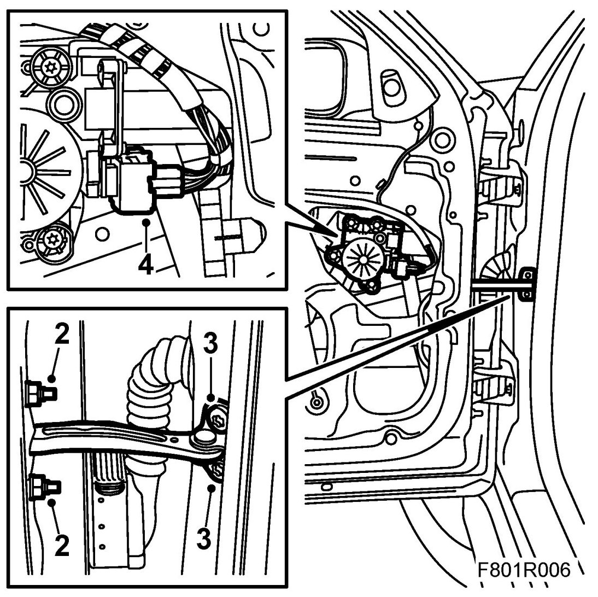

Front Door Limiter: Service and Repair
Door Catch Arm
Removing
1. Open the door. Remove the door trim and moisture barrier.
2. Remove the nuts on the door.

3. Remove the bolts in the pillar.
4. Part the window lift connector.
5. Lift the door catch arm from the door.
Fitting
1. Insert the door catch arm through the hole in the door.
2. Fit the nuts.

3. Fit the screws in the pillar.
4. Connect the window lift connector.
5. Fit the moisture barrier and door trim.
6. Check the function of the door catch arm and the window lift.
Cars with pinch protection: Perform Programming of the pinch protection.